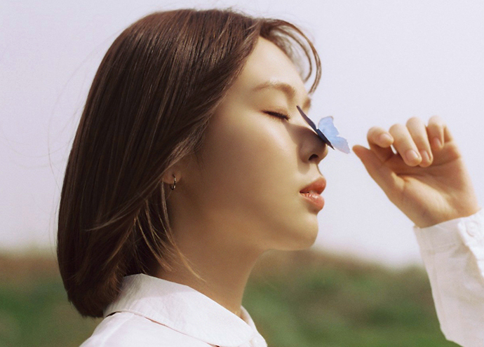

안녕하세요
요즘 구글뮤직의 추천 선곡이 저의 취향을 너무나도 정확하게 저격하고 있습니다.
이번에 추천 받은 가수는 싱어송라이터 최유리입니다.

이 곡은 최예본의 프로젝트 앨범에 있는 곡인데 피아노에 박보검이 세션으로 참여해서 화제가 되었다는 곡입니다.
목소리에 힘을 주지않고 숨쉬듯 노래하는 가수 최유리의 목소리가 너무 편해 다른 곡들을 찾아봤습니다. 가수 최유리는 볼빨간사춘기, 스웨덴세탁소, 김지수와 함께 쇼파르 엔터테인먼트 소속이며 소속사 가수들과 함께 어색한 사이라는 컴필레이션 노래에도 참여했습니다.
최유리가 부른 OST
드라마 갯마을 차차차의 OST 바람이나 드라마 사랑이라 말해요 OST 아픈 사랑은 되지 않기를, 드라마 서른, 아홉 이것밖에 등의 OST 등이 있습니다.
최유리의 리메이크 노래
리메이크 노래로 짙은의 잘 지내자, 우리, 브로콜리 너마저의 앵콜요청금지, 리즈의 그댄 행복에 살텐데 등을 불렀습니다.
짙은의 노래인 잘 지내자는 최유리의 목소리에 입문하기 정말 좋은 노래로 추천드립니다. 브로콜리 너마저의 앵콜요청금지는 계피의 목소리 정말 좋아했었는데, 완전히 다른 분위기의 음악으로 원곡의 팬인 저에게도 깊은 울림을 주었습니다.
싱어송라이터 최유리
2018년 유재하 음악경연대회에 직접 작사 작곡한 노래인 푸념으로 대상을 받은 최유리는 싱어송라이터로 많은 노래들을 발표했습니다. 2020년 미니 앨범 동그라미를 발매하며 정식으로 데뷔했으며, 위의 리메이크 노래들과 OST 를 제외한 현재까지 발표한 모든 노래의 작사, 작곡, 편곡을 직접했다고 합니다. 실력이 보증이 되는 유재하 음악경연대회 출신 가수들은 역시 노래들의 퀄리티가 참 좋습니다. 직접 쓴 가사들도 서정적이며 가사에 너무나도 잘 어울리는 편안한 목소리로 쉼이 필요한 사람들에게 마음이 편안함을 주는 것 같습니다. 일상의 안정이 필요한 여러분에게 추천드립니다.
최유리 노래 숲
마지막으로 최유리의 좋은 노래들이 많지만 작년 2022년 8월에 발표된 최유리의 숲을 올려두고 가겠습니다.
최유리 숲 - 가사
난 저기 숲이 돼볼게
너는 자그맣기만 한 언덕 위를
오르며 날 바라볼래?
나의 작은 마음 한구석이어도 돼
길을 터 보일게, 나를 베어도 돼
날 지나치지 마, 날 보아줘
나는 널 들을게, 이젠 말해도 돼
날 보며
아, 숲이 아닌 바다이던가?
옆엔 높은 나무가 있길래
하나라도 분명히 하고파
난 이제 물에 가라앉으려나?
난 저기 숲이 돼볼래
나의 옷이 다 눈물에 젖는대도
아, 바다라고 했던가?
그럼 내 눈물 모두 버릴 수 있나?
길을 터 보일게, 나를 베어도 돼
날 밀어내지 마, 날 네게 둬
나는 내가 보여, 난 항상 나를 봐
내가 늘 이래
아, 숲이 아닌 바다이던가?
옆엔 높은 나무가 있길래
하나라도 분명히 하고파
난 이제 물에 가라앉으려나?
나의 눈물 모아 바다로만
흘려보내 나를 다 감추면
기억할게, 내가 뭍에 나와 있어
그때 난 숲이려나?